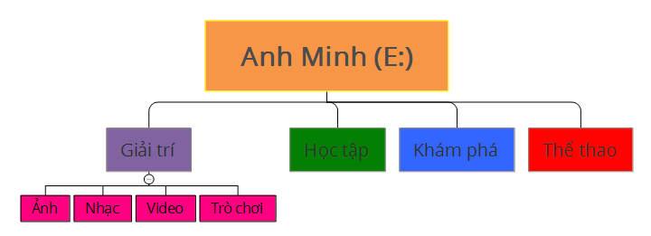

Mục tiêu bài học
Bài học giúp học sinh nắm vững cách tạo, đổi tên, di chuyển và xóa các tệp, thư mục trên hệ điều hành Windows.

ITeduShare - Cùng giáo viên Tin học kiến tạo tương lai
Bài học giúp học sinh nắm vững cách tạo, đổi tên, di chuyển và xóa các tệp, thư mục trên hệ điều hành Windows.
